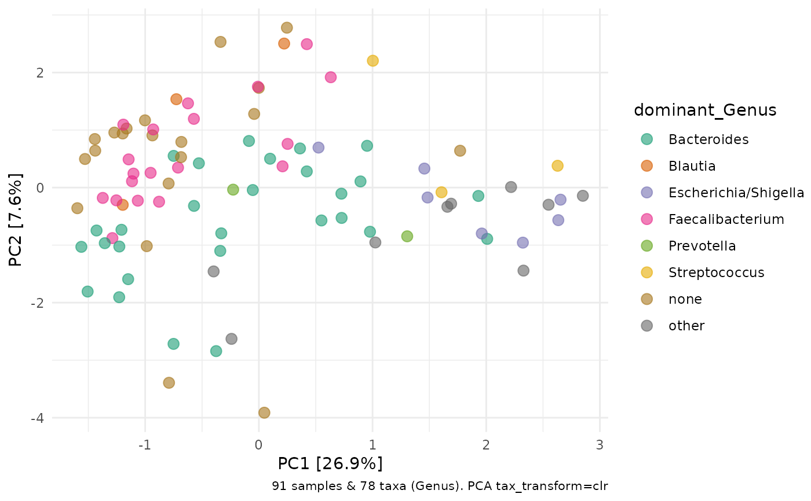
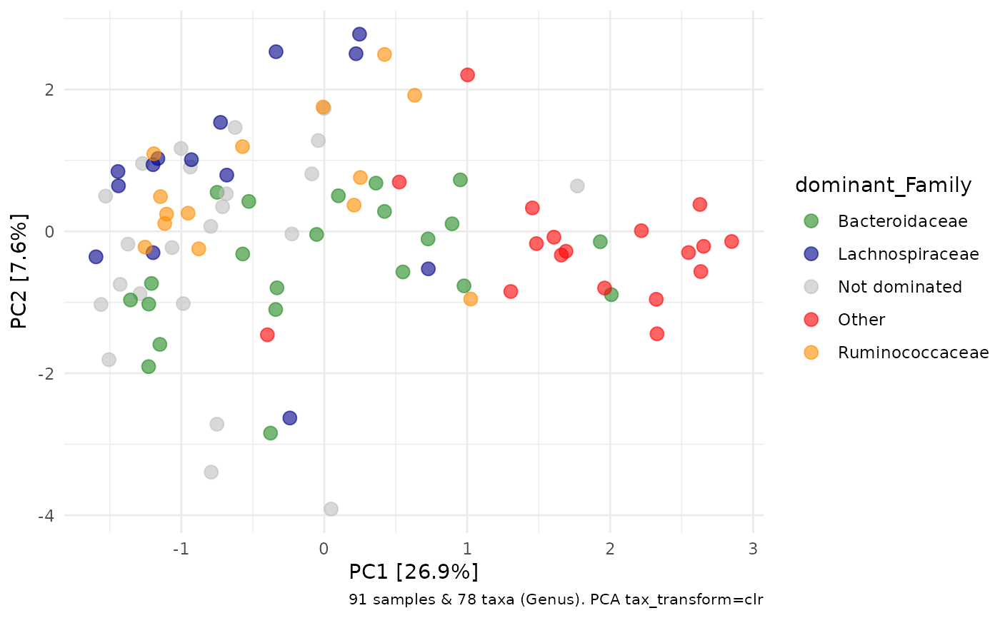

Which taxon is most abundant in each sample of your phyloseq object? This function adds this information as a new variable in your phyloseq sample_data.
If the most abundant taxon is below the proportional abundance threshold, the dominant taxon will be "none" for that sample
If there are more than n_max dominant taxa across all samples (not including "none") the dominant taxon will be "other" for those samples
ps_calc_dominant( ps, rank, threshold = 0.3, n_max = 6, var = paste("dominant", rank, sep = "_"), none = "none", other = "other" )
| ps | phyloseq object |
|---|---|
| rank | taxonomic rank to calculate dominance at |
| threshold | minimum proportion at which to consider a sample dominated by a taxon |
| n_max | maximum number of taxa that can be listed as dominant taxa |
| var | name of variable to add to phyloseq object sample data |
| none | character value to use when no taxon reaches threshold |
| other | character value to use when another taxon (>n_max) dominates |
phyloseq object
Thanks to Vitor Heidrich for the idea and a draft implementation
library(ggplot2) ps <- corncob::ibd_phylo %>% tax_filter(min_prevalence = 3) %>% tax_fix() %>% phyloseq_validate() ps %>% ps_filter(DiseaseState == "CD") %>% ps_calc_dominant(rank = "Genus") %>% comp_barplot(tax_level = "Genus", label = "dominant_Genus", n_taxa = 12) + coord_flip()ps %>% ps_calc_dominant(rank = "Genus") %>% tax_transform(rank = "Genus", trans = "clr") %>% ord_calc("PCA") %>% ord_plot(colour = "dominant_Genus", size = 3, alpha = 0.6) + scale_colour_brewer(palette = "Dark2")# customise function options ps %>% ps_calc_dominant( rank = "Family", other = "Other", none = "Not dominated", threshold = 0.4, n_max = 3 ) %>% tax_transform(rank = "Genus", trans = "clr") %>% ord_calc("PCA") %>% ord_plot(colour = "dominant_Family", size = 3, alpha = 0.6) + scale_colour_manual(values = c( Bacteroidaceae = "forestgreen", Lachnospiraceae = "darkblue", Ruminococcaceae = "darkorange", Other = "red", "Not dominated" = "grey" ))